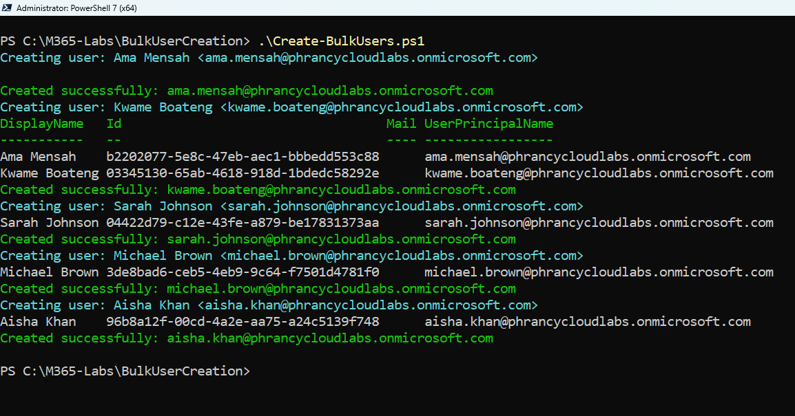
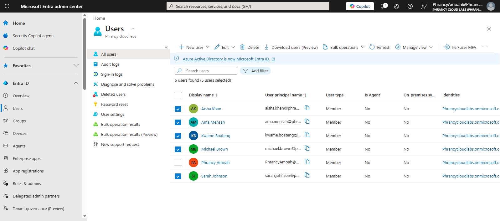
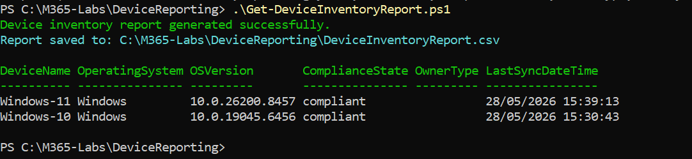
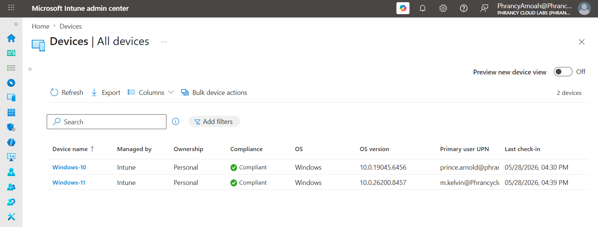
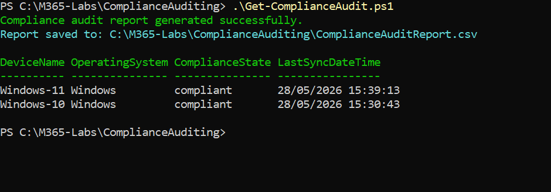
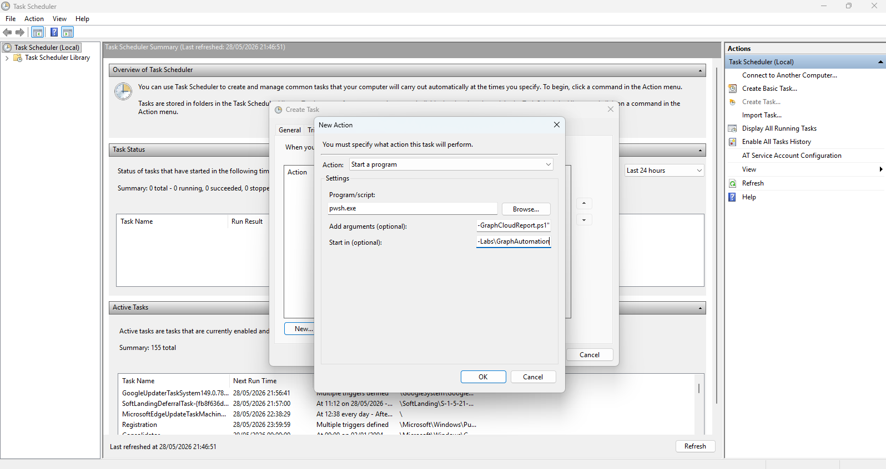
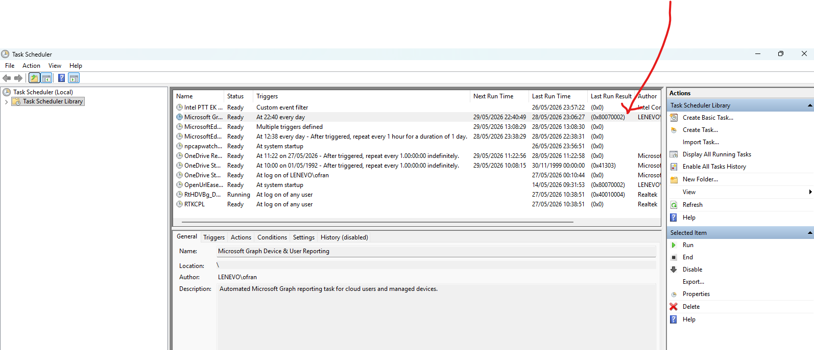
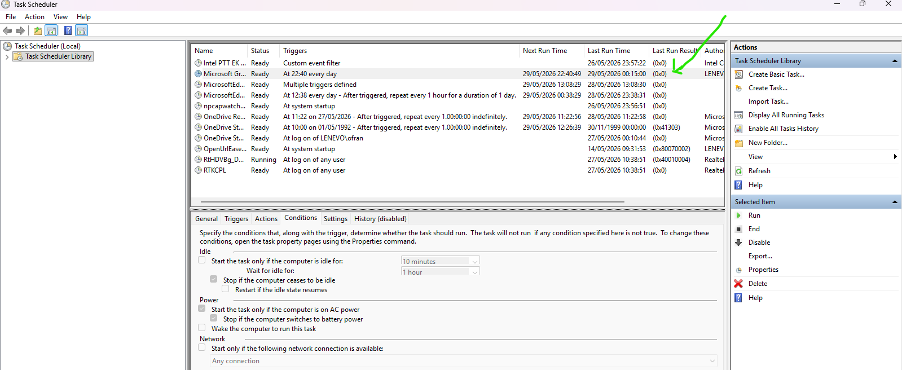

CLOUD AUTOMATION CASE STUDY
1. Project Overview
PowerShell Automation & Microsoft Graph Reporting
This project demonstrates how PowerShell 7 and the Microsoft Graph PowerShell SDK can automate identity and endpoint administration in a Microsoft 365 cloud environment.
In the Hybrid Identity case study, SweetCrust Bakery migrated existing on-premises employees from Active Directory Domain Services into Microsoft Entra ID. This project represents the next operational stage: onboarding new cloud-only employees directly into Microsoft Entra ID and automating reporting across Intune-managed endpoints.
The lab focuses on CSV-driven user provisioning, Microsoft Graph authentication, bulk user creation, device inventory reporting, compliance auditing, scheduled automation, and troubleshooting.
Project Summary
2. Technologies Used
- PowerShell 7
- Microsoft Graph PowerShell SDK
- Microsoft Entra ID
- Microsoft Intune
- Microsoft 365 E3 Tenant
- Windows 10 Endpoint
- Windows 11 Endpoint
- CSV-based onboarding files
- Windows Task Scheduler
3. The Business Problem
After modernizing identity and endpoint management, SweetCrust Bakery had two categories of users:
- Existing employees: Created in on-premises Active Directory and synchronized into Microsoft Entra ID.
- New cloud-only employees: Created directly in Microsoft Entra ID as the company adopted modern cloud administration.
Manual creation of cloud-only users through the Microsoft 365 or Entra admin portal was slow, repetitive, and error-prone. The IT administrator also needed a repeatable way to report on users, managed devices, compliance states, and scheduled cloud operations.
The business needed a scalable automation approach to reduce manual effort, improve consistency, and generate operational reports for identity and endpoint management.
4. Solution Architecture & Design
The solution was designed around a centralized IT admin workstation running PowerShell 7 and Microsoft Graph PowerShell SDK. The admin workstation connects securely to Microsoft Graph and performs cloud identity and endpoint reporting operations.
This design separates existing hybrid users from newly created cloud-only users while allowing the same Microsoft 365 tenant to be managed through repeatable automation.
5. Implementation Phases
Phase 1 — Admin Workstation Preparation
The admin workstation was prepared with PowerShell 7 and the Microsoft Graph PowerShell SDK. The Graph session was authenticated using delegated permissions required for user, directory, and managed device operations.

Phase 2 — Bulk Cloud-Only User Creation
A CSV-driven onboarding workflow was used to simulate an HR-provided list of new SweetCrust Bakery employees. These users represent new cloud-only hires created directly in Microsoft Entra ID, rather than users synchronized from on-premises Active Directory.
PowerShell processed the CSV file, generated user principal names, applied standardized attributes, and created multiple Microsoft Entra ID accounts through Microsoft Graph.


Phase 3 — Bulk Device Inventory Reporting
Device inventory reporting was automated by querying Intune-managed devices through Microsoft Graph. The report captured device names, operating systems, OS versions, compliance states, ownership type, and last sync timestamps.


Phase 4 — Compliance Auditing
Compliance auditing focused on endpoint security posture visibility. The automation pulled compliance state data from Intune to identify compliant, non-compliant, or error-state endpoints and exported the results for operational review.

Phase 5 — Graph API Reporting Automation
Microsoft Graph PowerShell SDK was used as the automation interface for cloud resource retrieval. The script queried both user identities and managed devices, then exported separate CSV reports for administrative review.

Phase 6 — Scheduled Automation
Windows Task Scheduler was configured to run the Graph reporting script automatically. This simulates a recurring enterprise reporting workflow where cloud inventory and compliance reports are generated without manual execution.


6. Technical Evidence
Technical evidence captured in this project includes Graph authentication, bulk cloud-only user creation, Microsoft Entra ID validation, Intune device inventory reporting, compliance auditing, Graph API report generation, scheduled task configuration, and scheduled automation troubleshooting.
7. Validation & Testing
| Validation Area | Result |
|---|---|
| Graph Authentication | PowerShell 7 session successfully authenticated to Microsoft Graph. |
| Bulk User Creation | Cloud-only users were created through Microsoft Graph and validated in Microsoft Entra ID. |
| Device Inventory Reporting | Windows 10 and Windows 11 endpoints were retrieved from Intune and exported to CSV. |
| Compliance Auditing | Endpoint compliance states were successfully queried and reported. |
| Graph Reporting | User and managed device reports were generated successfully. |
| Scheduled Automation | Task Scheduler execution was remediated and confirmed with Last Run Result 0x0. |
8. Troubleshooting
During scheduled automation validation, the task initially failed with 0x80070002.
This indicated that Task Scheduler could not locate the executable or script path correctly.

Root Cause
The PowerShell 7 executable path contained a space in Program Files. Task Scheduler
split the command incorrectly, interpreting C:\Program as the executable and moving
the rest of the path into the arguments field.
Resolution
The action was corrected by explicitly wrapping the PowerShell 7 executable path in quotation marks and keeping the script path inside the argument field.
"C:\Program Files\PowerShell\7\pwsh.exe"
-NoProfile -ExecutionPolicy Bypass -File "C:\M365-Labs\GraphAutomation\Get-GraphCloudReport.ps1"
9. Engineering Takeaways
- PowerShell and Microsoft Graph provide a repeatable way to onboard cloud-only users directly into Microsoft Entra ID.
- Hybrid users and cloud-only users can coexist in the same Microsoft 365 tenant, but they should be documented clearly.
- CSV-driven onboarding reduces manual portal work and improves consistency during hiring cycles.
- Graph-based reporting improves visibility across identities, devices, and compliance states.
- Scheduled automation helps convert manual administrative reporting into a repeatable operational workflow.
- Automation must be validated with logs, output files, and successful task execution results.